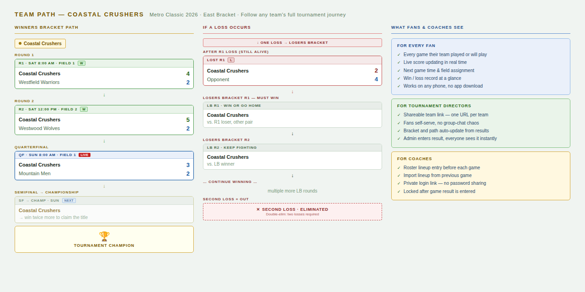
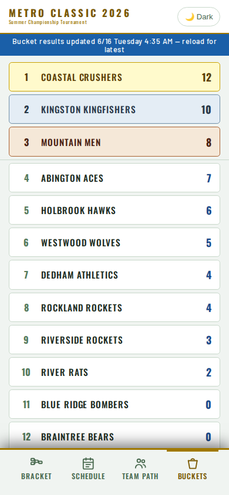

See it in action
Real screenshots from a live demo tournament. Try the live demo →







Live bracket · By-round schedule · Team Path · Coach lineups. One link, any device. No app download. No group-chat chaos.
The group chat, 20 minutes after game 1 ends.
Everyone has the bracket, the schedule, and the live score — before they even think to ask.
A full double-elimination bracket that updates as results come in. Games in progress show a pulsing ● LIVE indicator with the score and inning — fans see it change without refreshing.
Bracket, Schedule, Team Path, and a Challenge Leaderboard. Team Path lets fans jump straight to their team's road through the bracket — shareable by link.
Enter results, set game times and fields, and flip a game to live — all from your phone. One-tap live scoring: update the score and inning, hit finalize, done.
Separate logins for admins, scorekeepers, coaches, and leaderboard editors. Delegate without handing over the keys. Secure login with rate-limiting built in.
Visitors can add TournaTrak to their home screen and open it full-screen like a native app. No app store. No download friction. Just a link. Designed to hold up on spotty tournament-field Wi-Fi.
Coaches get a private link to submit their batting order and positions before each game. Import last game's lineup in one tap. Automatically locks once the result is entered — no more late edits.
Set your tournament name, scoring labels (Inning, Quarter, Half, Period, Set…), date formats, default tab, and light or dark theme — all from the settings panel.
Enter your teams, game times, and fields in the admin panel. The bracket builds itself.
Send the tournament link to teams, families, and fans. That's the only step they need.
As games are played, enter scores from your phone. Everyone watching sees it instantly.
The flagship use case — built and battle-tested on a real 16-team double-elimination event.
Weekend brackets where everyone wants to know "who's up next and on which field."
Scoring labels are fully configurable — Inning, Quarter, Half, Period, Set. Fits basketball, soccer, volleyball, hockey, and more.
Run a clean, professional bracket without expensive bracket software or a spreadsheet nobody can read.
Most bracket tools are either glorified spreadsheets or overpowered registration platforms. TournaTrak is built specifically for the TD who needs to run the day, not spend it copying scores into a PDF and answering texts. The combination of a live bracket, inline schedule, Team Path with shareable links, and a coach lineup tool in one self-hosted app is — to our knowledge — rare in this space.
Real screenshots from a live demo tournament. Try the live demo →


No — TournaTrak is a website. Anyone can open the link in any browser, on any phone or laptop. If you want the full app feel, you can optionally add it to your home screen in one tap and it opens full-screen like a native app.
No per-seat pricing — it's a single app for your whole event. Teams, families, and fans all use the same link. Reach out to talk through what works for your tournament.
TournaTrak is built around double-elimination brackets. The scoring-period label is fully configurable — Inning, Quarter, Half, Period, Set — so it fits softball, baseball, basketball, soccer, volleyball, hockey, and more.
Yes. Games in progress show a pulsing ● LIVE indicator with the current score and inning/period right on the bracket card. The score updates in real time — no refresh needed.
Yes — TournaTrak has separate roles for full admins, scorekeepers, coaches, and leaderboard editors, so you can delegate exactly the right level of access to each person.
It's built to be resilient on spotty tournament-field Wi-Fi and cell. TournaTrak is designed to keep showing the latest data it has and recover gracefully when the connection drops.
TournaTrak is in active development. If you'd like to use it for an upcoming tournament, get in touch — we'd love to set it up with you.
Get in touch